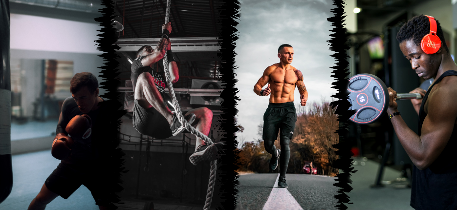

¡OPTIMÍZALO YA!
EN ESTE APARTADO ENCONTRARAS AYUDA
PARA PODER MEJORAR TUS ENTRENAMIENTOS
¿QUIERES GANAR MÁS MÚSCULO?

¿Cuántas repeticiones son las más óptimas para la ganancia muscular?
Las repeticiones en un entrenamiento son muy relativas, ya que depende tu objetivo. Si en tu caso es ganar masa muscular, lo más óptimo sin duda es en un rango de 8 a 12 repeticiones.
Hay que entender que en ese rango de repeticiones los músculos se podrán estimular sin un exceso de repeticiones o en caso contrario pocas. El punto es llegar a un punto medio para que el músculo pueda recuperarse lo suficiente y necesario para poder darle la misma intensidad en el próximo entrenamiento.
Esta forma de entrenar te ayudará a ganar músculo y fuerza, pero como prioridad ganar músculo. Hay que dejar en claro algo, si haces demasiadas repeticiones destrozarás el músculo y el cuerpo se centrará en reconstruir los daños causados en vez de recuperar lo suficiente y fortalecerlos.
¿Cuántas series?
Hablando de las series óptimas para ganar músculo hace falta darle un buen volumen, lo recomendable es de 4 o 5 series por ejercicio de 8 a 12 repeticiones.
¿Cuánto tiempo descansar por serie?
Para poder hacer series de calidad, es decir, quedarte a 1 o 2 repeticiones antes del fallo muscular, es necesario descansar de 3 a 5 minutos si lo necesitas. Más de 5 minutos no es recomendable, ya que se enfriara el músculo.
¿Cuánto tiempo dejar descansar el músculo hasta volver a entrenarlo?
Es muy necesario dejar al músculo, dejarlo descansar al menos 48H es decir 2 días. Esas horas son las suficientes para poder entrenarlos y volver a tener esa calidad de entrenamiento que tanto necesitamos.
¿QUIERES GANAR MÁS FUERZA?
¿Cuántas repeticiones son las más óptimas para ganar fuerza?
Para optimizar la fuerza, la mejor opción es hacer un rango de repeticiones de 3 a 5 repeticiones.
Básicamente, aquí lo importa es levantar el mayor peso posible para, después más adelante, hacer una repetición máxima, es decir, una RM.
¿Cuántas series?
En las series de fuerza es similar a las de hipertrofia, es decir, ganancia muscular. Solo cambia una cosa y es que el rango más recomendable es de 3 a 4 series, de 3 a 5 repeticiones.
Aproximaciones
Sin duda hace falta hacer Aproximaciones más aún si vas a levantar un buen peso, te puedes evitar de lesiones y futuros problemas en las articulaciones.
¿Cuánto tiempo descansar por serie?
En estos casos hace falta descansar un mínimo de 5 min para adelante. Es recomendable volver a levantar el peso cuando te sientas listo.
¿Cuánto tiempo dejar descansar el músculo hasta volver a entrenarlo?
Es muy necesario dejar al músculo descansar al menos 48H es decir 2 días. Es importante saber que al volver a entrenar el mismo músculo puedes notar una reducción de fuerza y es muy normal y más si entrenas fuerza. Así que si hace falta bajar el peso para seguir entrenando hazlo. Las RM deben tirarse máximo 3 veces al año, es decir 3 preparaciones, cada preparación son unas 12 semanas.
¿QUIERES GANAR MAS RENDIMIENTO?
¿Cuántas repeticiones son las más óptimas para tener un buen rendimiento?
En este caso las repeticiones pueden ser altas, hablamos de unas 15 a 20 repeticiones. Es este caso lo que interesa es que el músculo pueda aguantar la fatiga.
¿Cuántas series?
Las series son altas o incluso pueden combinarse con otros ejercicios, es decir, bi series.
¿Cuánto tiempo descansar por serie?
En este caso lo que interesa es tener un buen aguante de los músculos, es por eso que se descansa de 30 segundos a 1 min máximo.
¿Cuánto tiempo dejar descansar el músculo hasta volver a entrenarlo?
Es muy necesario dejar al músculo descansar al menos 48H es decir 2 días. Es cierto que necesitan descansar, pero al buscar el mejor rendimiento se suele hacer otro tipo de deporte full body, por lo cual trabaja todo el cuerpo constantemente.
¿Es necesario hacer más de un deporte?
Es muy recomendable hacer más de un deporte. Así trabajarás la fuerza, resistencia, agilidad y flexibilidad. En resumen buscamos un cuerpo funcional con el que nos podemos adaptar a todo tipo de deporte y situación.